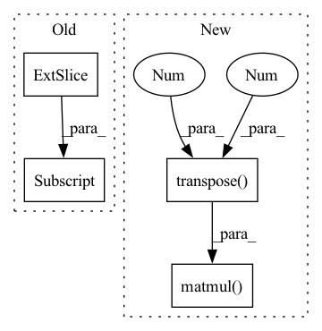

Pattern ID :40454
Before Change
self.head = SVDHead(args=args)
def forward(self, src, tgt, T_gt=None, prefix="train"):
feat1 = src[..., :3] .transpose(1, 2)
feat2 = tgt[..., :3].transpose(1, 2)
src = src[..., :3]
tgt = tgt[..., :3]After Change
rotation_ba, translation_ba = self.head(tgt_embedding, src_embedding, tgt, src)
else:
rotation_ba = rotation_ab.transpose(2 , 1 ) .contiguous()
translation_ba = -torch.matmul( rotation_ba, translation_ab.unsqueeze(2)) .squeeze(2)
T_12 = rt_to_transformation(rotation_ab, translation_ab.unsqueeze(2))
In pattern: SUPERPATTERN
Frequency: 3
Non-data size: 4
Instances Fragment ID: 114656470
Project Name: paul007pl/mvp_benchmark
Commit Name: cb5622fec6ad947b57a83033563a402533978c61
Time: 2021-07-12
Author: panliang_de2007@qq.com
File Name: registration/models/dcp.py
M Class Name: Model
N Class Name: Model
M Method Name: forward(5)
N Method Name: forward(5)
M Parent Class: nn.Module
N Parent Class: nn.Module
M File Name: registration/models/dcp.py
N File Name: registration/models/dcp.py
M Start Line: 270
M End Line: 294
N Start Line: 394
N End Line: 425
Before Change
scene_2 = self.convScene_2(scene_1)
for i in range(dim_batch):
weight_read[i] = self.similarity(self.memory_past, state_past[:, i] ).unsqueeze(0)
// weight_read[torch.arange(dim_batch)] = self.similarity(self.memory_past, state_past[:,torch.arange(dim_batch)]).unsqueeze(0)
index_max = torch.sort(weight_read, descending=True)[1].cpu()After Change
// Cosine similarity
past_normalized = F.normalize(self.memory_past, p=2, dim=1)
state_normalized = F.normalize(state_past.squeeze(), p=2, dim=1)
weight_read = torch.matmul( past_normalized, state_normalized.transpose(0 ,1 ) ) .transpose(0,1)
index_max = torch.sort(weight_read, descending=True)[1].cpu()
Fragment ID: 114656477
Project Name: marchetz/mantra-cvpr20
Commit Name: 433bba3b3cf57d5cf7723c46a7fcfd17c1bac858
Time: 2019-07-28
Author: fede.becat@gmail.com
File Name: models/model_memory_single.py
M Class Name: model_memory_single
N Class Name: model_memory_single
M Method Name: forward(3)
N Method Name: forward(3)
M Parent Class: nn.Module
N Parent Class: nn.Module
M File Name: models/model_memory_single.py
N File Name: models/model_memory_single.py
M Start Line: 118
M End Line: 139
N Start Line: 134
N End Line: 136
Before Change
// A: Normalized IFC
ifc = Rss[..., -1]
ifc0 = ifc[..., -1]
ifc0[:, 0] = 1
ifc = ifc / (ifc0.unsqueeze(-1) + EPS)
// B: IFC via EVDAfter Change
ifc0 = ifc[..., -1]
ifc = ifc / (ifc0.unsqueeze(-1) + EPS)
if cholesky_decomp:
A = A.matmul(A.conj().transpose(-1 , -2 ) )
if inverse:
num = torch.einsum("...nm,...m->...n", A, ifc)
else:
num = torch.linalg.solve(Rnn, ifc) Fragment ID: 114656472
Project Name: rikorose/deepfilternet
Commit Name: 71013a3ff5bc0ff6435a10f2906e288588c36863
Time: 2022-10-31
Author: Rikorose@users.noreply.github.com
File Name: DeepFilterNet/df/multiframe.py
M Class Name: AnonimousClass
N Class Name: AnonimousClass
M Method Name: compute_ideal_mvdr(3)
N Method Name: compute_ideal_mvdr(1)
M Parent Class:
N Parent Class:
M File Name: DeepFilterNet/df/multiframe.py
N File Name: DeepFilterNet/df/multiframe.py
M Start Line: 405
M End Line: 468
N Start Line: 435
N End Line: 507